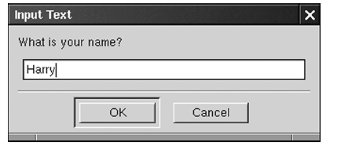

Another convenient dialog is the text entry
dialog that asks the user to supply a single line of text.
wxTextEntryDialog* dialog = new wxTextEntryDialog(this,
"What is your name?";
dialog->ShowModal();
string name = dialog->GetValue().c_str();
dialog->Destroy();

The GetValue function returns a
wxString. That class also has a c_str function to
convert to a C string.